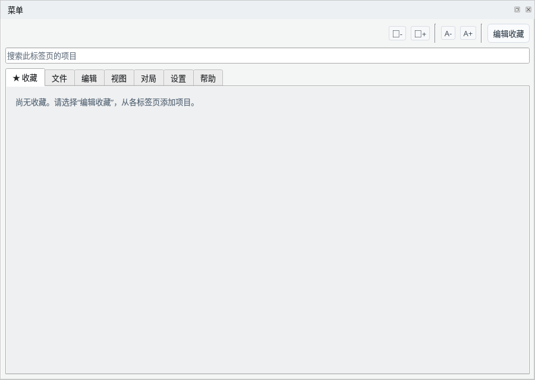
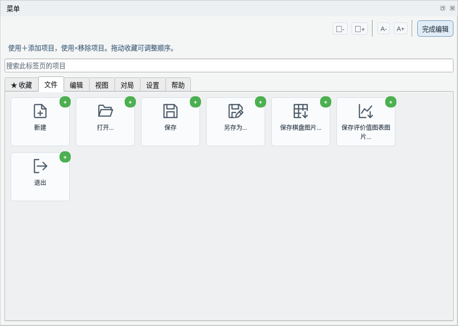
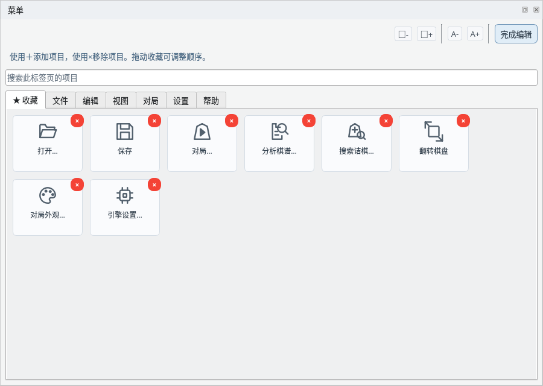
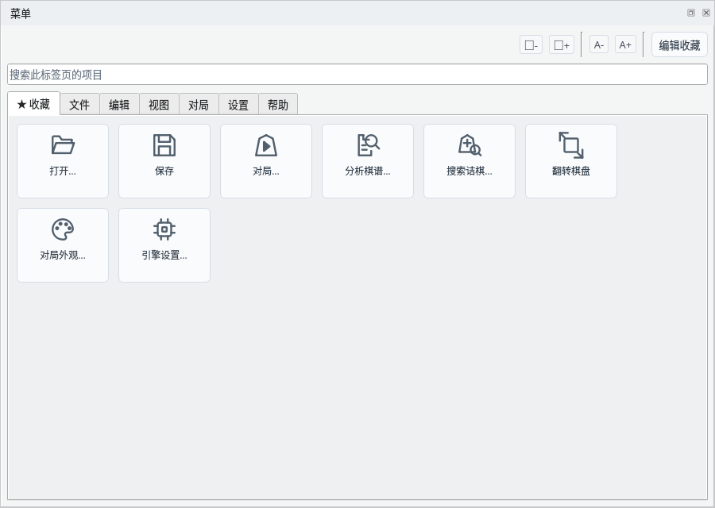

在菜单面板中快速执行各种操作
截图在 Linux 上以简体中文界面拍摄。
把常用功能汇集到收藏中，快速使用
“★ 收藏”标签页中显示已添加的项目。最初没有添加任何项目，只显示提示。

收藏标签页：未添加的状态
点击右上角的“编辑收藏”开始编辑，按钮会变为“完成编辑”。各标签页项目的右上角会显示绿色的“+”，点击即可把该项目添加到收藏。

编辑收藏：用“+”添加
编辑期间打开收藏标签页，已添加项目的右上角会显示红色的“×”，点击即可从收藏中移除。拖动项目可以调整顺序。完成后点击“完成编辑”。

编辑收藏：用“×”移除，拖动调整顺序
添加的项目会汇集在“★ 收藏”标签页中。添加常用功能后，无需切换标签页即可使用。

添加的项目显示在收藏标签页中